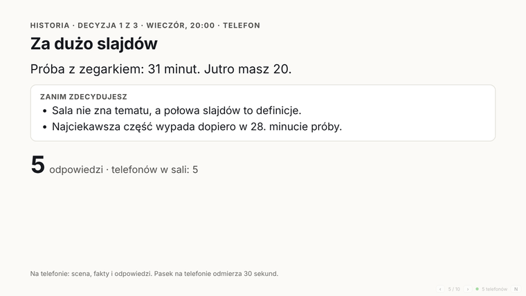
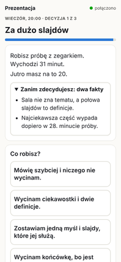

Działa z dowolnym czatem AI, także darmowym. Bez konta, bez instalowania i bez własnej strony.
Co to jest. Uczestnicy skanują kod QR i wcielają się w jedną rolę, na przykład psychologa szkolnego. W kilku scenach decydują telefonem, co zrobić w sprawie wymyślonego bohatera, i od razu widzą skutek swojej decyzji. Na dużym ekranie widać, jak wybrała sala, a potem ocenę każdej odpowiedzi według dwóch kryteriów, które ustalasz, np. „Zgodne z prawem?” i „Dobre dla ucznia?”. Na końcu każdy dostaje na telefonie własne zakończenie.
Co jest potrzebne. Laptop z przeglądarką, rzutnik, internet i telefony uczestników. Odpowiedzi są anonimowe. Tę stronę najlepiej otworzyć na laptopie, z którego poprowadzisz zajęcia.
Jak powstaje treść. Wymyślasz ją razem z czatem AI: ta strona daje gotowe instrukcje do wklejenia, a czat zadaje pytania z odpowiedziami do wyboru. Możesz też wpisać wszystko ręcznie.
Zobacz przykład

Skopiuj instrukcję i wklej ją do czatu, którego używasz: ChatGPT, Gemini, Copilot, Claude albo innego. Czat zada ci pytania z gotowymi odpowiedziami. Odpowiadasz literami, np. „1b 2a 3c”, albo po swojemu.
Na końcu czat opisze pomysł na prezentację. Poprawiaj go w rozmowie, aż będzie ci pasował, i napisz „akceptuję”.
Czat od razu pisze całą prezentację, zamiast pytać? Napisz mu: „Zadawaj pytania po kolei, tak jak w instrukcji”.
Wklej tu pomysł, który zaakceptowałeś. Polecenie z kroku 3 zabierze go ze sobą, więc zadziała także w nowej rozmowie.
Wklej do tej samej rozmowy drugie polecenie. Czat zapisze prezentację jako kartę: zwykły tekst z etykietami, bez kodu. Skopiuj ją i wklej poniżej.
Jeśli czat przerwie i napisze KONTYNUACJA, odpisz „dalej” i doklej następną część pod poprzednią.
Czerwone linie trzeba poprawić, żółte warto przeczytać. Najprościej: skopiuj uwagi, wklej je do czatu i podmień kartę na poprawioną.
Czat może się mylić. Tych rzeczy nie był pewien:
Wklej kartę w kroku 3. Gdy będzie bez błędów, odblokują się przyciski.
Prezentacja jest zapisana w tej przeglądarce. Jeśli poprowadzisz zajęcia z innego komputera, pobierz plik i wczytaj go tam w kroku 3.
Wersja 1.0 · 23.11.2026. Masz Claude z dostępem do plików? Jest też pełna wersja z dziewięcioma dodatkowymi wzorcami (typowanie liczby, praca w grupach, debata): instrukcja i paczka z plikami. Opis techniczny i kod: GitHub.